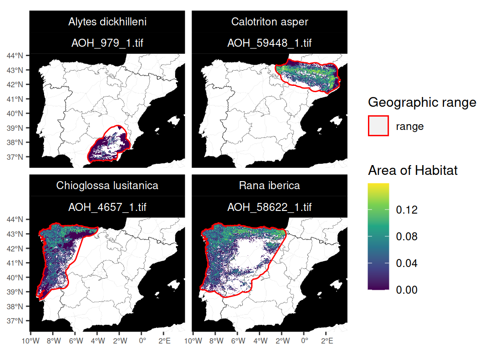

aoh: Create Area of Habitat Data
Overview
Area of Habitat (AOH) maps aim to delineate the spatial distribution of suitable habitat for a species (Brooks et al. 2019). They are used to help understand the impacts of habitat loss on species, and prioritize areas for conservation (e.g. Tracewski et al. 2016; Rondinini et al. 2005). These maps are generally produced by obtaining geographic range data for a species, and then removing areas that do not contain suitable habitat or occur outside the known altitudinal limits for the species (Brooks et al. 2019). To help make these maps accessible, the aoh R package provides routines for automatically creating Area of Habitat data based on the International Union for Conservation of Nature (IUCN) Red List of Threatened Species. After manually downloading species range data from the IUCN Red List, users can import them (using read_spp_range_data()) and then use them to create Area of Habitat data (using create_spp_aoh_data()). Global elevation and habitat classification data (Amatulli et al. 2018; Jung et al. 2020) are automatically downloaded, and data on species’ habitat preferences and altitudinal limits are obtained automatically using the IUCN Red List API. Since accessing the IUCN Red List requires a token, users may need to obtain a token and update their R configuration to recognize the token (see installation instructions below for details).
Installation
Package installation
The latest developmental version of the aoh R package can be installed using the following R code. Please note that it requires the sf, terra, and zen4R R packages which may require additional software to be installed. If you encounter problems installing these dependencies, please consult their installation instructions.
if (!require(remotes)) install.packages("remotes")
remotes::install_github("prioritizr/aoh")Accessing the IUCN Red List API
After installing the aoh R package, you will need to obtain a token for the IUCN Red List API (if you do not have one already). To achieve this, please visit the IUCN website (see https://apiv3.iucnredlist.org/api/v3/token) and fill out the form to apply for a token. You should then receive a token shortly after completing the form (but not immediately). After receiving a token, please open the .Renviron file on your computer (e.g. using usethis::edit_r_environ()). Next, please add the following text to the file (replacing the string with the token) and save the file:
IUCN_REDLIST_KEY="your_actual_token_not_this_string"Please restart your R session. You should now be able to access the IUCN Red List API. To verify this, please try running the following R code and – assuming everything works correctly – you should see the current version of the IUCN Red List:
# verify access to IUCN Red List API
rredlist::rl_version()If these instructions did not work, please consult the documentation for the rredlist R package for further details.
Usage
Here we provide a short introduction to the aoh R package. In this example, we will generate Area of Habitat data for the following Iberian species: Pyrenean brook salamander (Calotriton asper), Iberian frog (Rana iberica), western spadefoot toad (Pelobates cultripes), and golden striped salamnader (Chioglossa lusitanica). To start off, we will load the package. We will also load the rappdirs R package to cache data, and the terra and ggplot2 R packages to visualize results.
Now we will import range data for the species. Although users would typically obtain range data from the International Union for Conservation of Nature (IUCN) Red List of Threatened Species, here we will use built-in species range data that distributed with the package for convenience. Please note that these data were not obtained from the IUCN Red List, and were manually generated using occurrence records from the Global Biodiversity Information Facility.
# find file path for data
path <- system.file("extdata", "EXAMPLE_SPECIES.zip", package = "aoh")
# import data
spp_range_data <- read_spp_range_data(path)
# preview data
print(spp_range_data)## Simple feature collection with 4 features and 26 fields
## Geometry type: POLYGON
## Dimension: XY
## Bounding box: xmin: -9.479736 ymin: 36.59422 xmax: 3.302702 ymax: 43.76455
## Geodetic CRS: WGS 84
## # A tibble: 4 × 27
## id_no binomial presence origin seasonal compiler yrcompiled citation
## <dbl> <chr> <int> <int> <int> <chr> <dbl> <chr>
## 1 979 Alytes dickhi… 1 1 1 Derived fro… NA <NA>
## 2 59448 Calotriton as… 1 1 1 Derived fro… NA <NA>
## 3 4657 Chioglossa lu… 1 1 1 Derived fro… NA <NA>
## 4 58622 Rana iberica 1 1 1 Derived fro… NA <NA>
## # … with 19 more variables: subspecies <chr>, subpop <chr>, source <chr>,
## # island <chr>, tax_comm <chr>, dist_comm <chr>, generalisd <int>,
## # legend <chr>, kingdom <chr>, phylum <chr>, class <chr>, order_ <chr>,
## # family <chr>, genus <chr>, category <chr>, marine <chr>, terrestial <chr>,
## # freshwater <chr>, geometry <POLYGON [°]>Next, we will generate Area of Habitat data for the species. To achieve this, the package will (i) automatically download global elevation and habitat classification data (from Amatulli et al. 2018; Jung et al. 2020), (ii) automatically download information on the altitudinal limits and habitat preferences of the species from the IUCN Red List (per the taxon identifiers in the id_no column), and (iii) cross-reference this information to identify suitable habitat inside the geographic range of each species (following Brooks et al. 2019). We also specify a folder to cache the downloaded datasets so that we won’t need to re-downloaded again during subsequent runs.
# specify cache directory
cache_dir <- user_data_dir("aoh")
# create cache_dir if needed
if (!file.exists(cache_dir)) {
dir.create(cache_dir, showWarnings = FALSE, recursive = TRUE)
}
# specify folder to save Area of Habitat data
## although we use a temporary directory here to avoid polluting your
## with examples files, you would normally specify the folder
## on your computer where you want to save data
output_dir <- tempdir()
# generate Area of Habitat data
## note that this function might take a complete because it will need to
## download the global habitat and elevation data that first time you run it.
spp_aoh_data <- create_spp_aoh_data(
spp_range_data, output_dir = output_dir, cache_dir = cache_dir
)While running the code, we see that it displayed a message telling us that certain habitat classes were not available (i.e. “5.18”, “7.1”, and “7.2”). This is fine. It is not an error. The reason we see this message is because although the global habitat dataset contains the majority of IUCN habitat classes for terrestrial environments, it does not contain every single IUCN habitat class (see Jung et al. 2020 for details). Upon checking the IUCN habitat classes, we can see that these classes correspond to caves and other subterranean environments. Although failing to account for such habitats could potentially be an issue, here we will assume that accounting for the species’ non-subterranean habitats is sufficient to describe their spatial distribution (similar to Ficetola et al. 2015).
# preview results
## resulting dataset is a simple features (sf) object containing
## spatial geometries for cleaned versions of the range data
## (in the geometry column) and the following additional columns:
##
## - id_no : IUCN Red List taxon identifier
## - seasonal : integer identifier for seasonal distributions
## - full_habitat_code: All IUCN Red List codes for suitable habitat classes
## (multiple codes are delimited using "|" symbols)
## - habitat_code : IUCN Red List codes for suitable habitat classes
## used to create AOH maps
## - elevation_lower : lower limit for the species on IUCN Red List
## - elevation_upper : upper limit for the species on IUCN Red List
## - xmin : minimum x-coordinate for Area of Habitat data
## - xmax : maximum x-coordinate for Area of Habitat data
## - ymin : minimum y-coordinate for Area of Habitat data
## - ymax : maximum y-coordinate for Area of Habitat data
## - path : file path for Area of Habitat data (GeoTIFF format)
##
## since data obtained from the IUCN Red List cannot be redistributed,
## we will not show all the columns in this object
##
## N.B. you can view all columns on your computer with: print(spp_aoh_data)
print(spp_aoh_data[, c("id_no", "seasonal", "path")])## Simple feature collection with 4 features and 3 fields
## Geometry type: POLYGON
## Dimension: XY
## Bounding box: xmin: -914690 ymin: 4364364 xmax: 318726 ymax: 5066793
## Projected CRS: World_Behrmann
## # A tibble: 4 × 4
## id_no seasonal path geometry
## <dbl> <int> <chr> <POLYGON [m]>
## 1 4657 1 /tmp/Rtmpb3hNyg/AOH_4657_1.tif ((-855061 4559107, -854997 455…
## 2 58622 1 /tmp/Rtmpb3hNyg/AOH_58622_1.tif ((-849079 4613824, -835314 460…
## 3 59448 1 /tmp/Rtmpb3hNyg/AOH_59448_1.tif ((-244432 5022110, -248291 500…
## 4 979 1 /tmp/Rtmpb3hNyg/AOH_979_1.tif ((-102404 4469056, -97966 4483…After generating the Area of Habitat data, we can import them.
# import the Area of Habitat data
## since the data for each species have a different spatial extent
## (to reduce file sizes), we will import each dataset separately in a list
spp_aoh_rasters <- lapply(spp_aoh_data$path, rast)
# preview raster data
print(spp_aoh_rasters)## [[1]]
## class : SpatRaster
## dimensions : 516, 537, 1 (nrow, ncol, nlyr)
## resolution : 1000, 1000 (x, y)
## extent : -915531, -378531, 4551769, 5067769 (xmin, xmax, ymin, ymax)
## coord. ref. : World_Behrmann
## source : AOH_4657_1.tif
## name : lyr.1
## min value : 0
## max value : 0.1428571
##
## [[2]]
## class : SpatRaster
## dimensions : 499, 752, 1 (nrow, ncol, nlyr)
## resolution : 1000, 1000 (x, y)
## extent : -904531, -152531, 4568769, 5067769 (xmin, xmax, ymin, ymax)
## coord. ref. : World_Behrmann
## source : AOH_58622_1.tif
## name : lyr.1
## min value : 0.0001428571
## max value : 0.158
##
## [[3]]
## class : SpatRaster
## dimensions : 228, 568, 1 (nrow, ncol, nlyr)
## resolution : 1000, 1000 (x, y)
## extent : -248531, 319469, 4837769, 5065769 (xmin, xmax, ymin, ymax)
## coord. ref. : World_Behrmann
## source : AOH_59448_1.tif
## name : lyr.1
## min value : 0
## max value : 0.1785714
##
## [[4]]
## class : SpatRaster
## dimensions : 260, 371, 1 (nrow, ncol, nlyr)
## resolution : 1000, 1000 (x, y)
## extent : -468531, -97531, 4363769, 4623769 (xmin, xmax, ymin, ymax)
## coord. ref. : World_Behrmann
## source : AOH_979_1.tif
## name : lyr.1
## min value : 0
## max value : 0.1307143Finally, let’s create some maps to compare the range data with the Area of habitat data. Although we could create these maps manually (e.g. using the ggplot2 R package), we will use a plotting function distributed with the aoh R package for convenience.
# create maps
map <-
plot_spp_aoh_data(spp_aoh_data, zoom = 6, maptype = "toner-background") +
scale_fill_viridis_c() +
scale_color_manual(values = c("range" = "red")) +
scale_size_manual(values = c("range" = 0.5)) +
theme(
axis.title = element_blank(),
axis.text = element_text(size = 6),
strip.text = element_text(color = "white"),
strip.background = element_rect(fill = "black", color = "black")
)
# display maps
print(map)
Citation
Please cite the aoh R package and the underlying datasets used to produce Area of Habitat data.
To cite the aoh package and the underlying datasets used to create the
Area of Habitat data, please use:
Hanson JO (2021) aoh: Create Area of Habitat Data. R package version
0.0.0.99999. Available at https://github.com/jeffreyhanson/aoh.
IUCN [insert year]. IUCN Red List of Threatened Species. Version
[insert version]. Available at www.iucnredlist.org.
Amatulli G, Domisch S, Tuanmu M-N, Parmentier B, Ranipeta A, Malczyk
J, and Jetz W (2018) A suite of global, cross-scale topographic
variables for environmental and biodiversity modeling. Scientific
Data, 5:180040.
Jung M, Dahal PR, Butchart SHM, Donald PF, De Lamo X, Lesiv M, Kapos
V, Rondinini C, and Visconti P (2020a) A global map of terrestrial
habitat types. Scientific data, 7:1--8.
Jung M, Dahal PR, Butchart SHM, Donald PF, De Lamo X, Lesiv M, Kapos
V, Rondinini C, and Visconti P (2020b) A global map of terrestrial
habitat types (insert version) [Data set]. Zenodo. Available at
https://doi.org/10.5281/zenodo.4058819.
To see these entries in BibTeX format, use 'print(<citation>,
bibtex=TRUE)', 'toBibtex(.)', or set
'options(citation.bibtex.max=999)'.